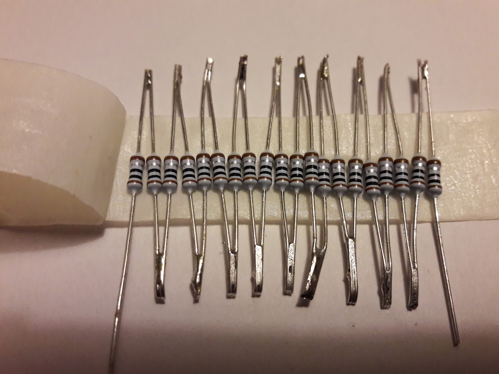
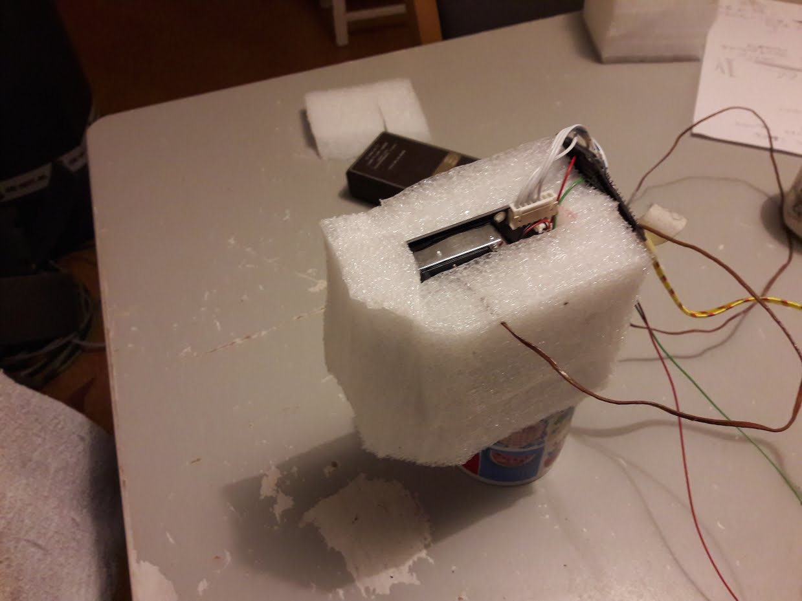
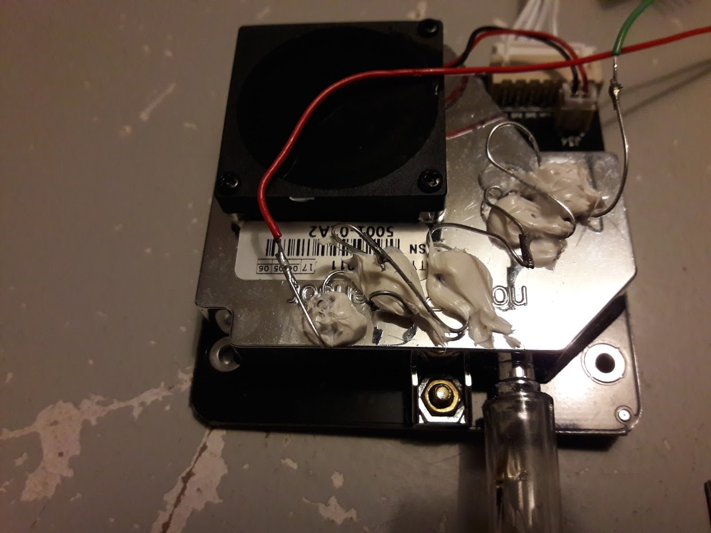
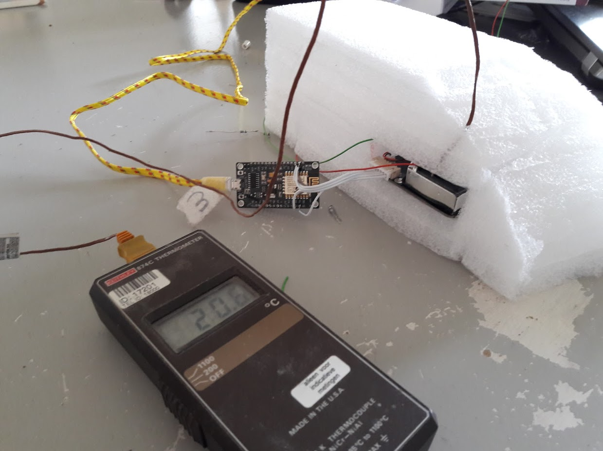
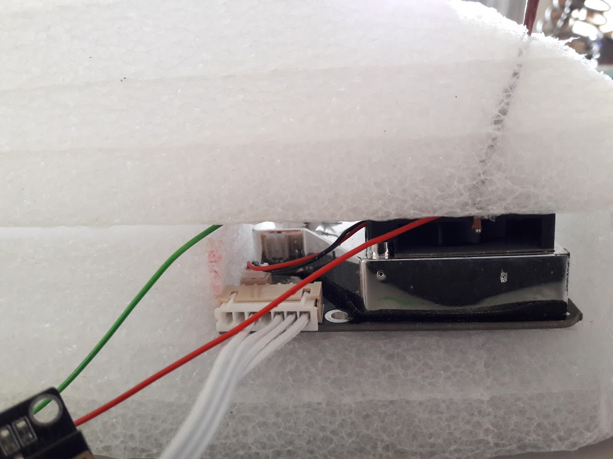
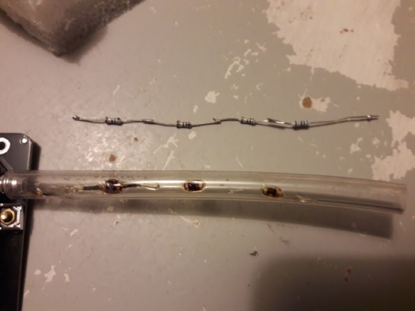

SDS011 Verwarming
14 April, 2018
15:32
Inleiding:
Bij een hoge luchtvochtigheid werkt de SDS011 slecht, omdat vochtdeeltjes onterecht worden meegeteld in de meetwaarden.
Eén van de ideeën om de beperking te omzeilen is het verlagen van de relatieve luchtvochtigheid door het verhogen van de temperatuur. We kunnen natuurlijk prachtige regelingen bedenken die een verwarming regelen op basis van temperaturen en relatieve luchtvochtigheden, maar waarom niet eerst heel simpel: bepaald vermogen erin = bepaalde temperatuur stijging = bepaalde daling van de relatieve luchtvochtigheid. Aangezien de maximale relatieve luchtvochtigheid nooit groter is dan 100%, moet het goed mogelijk zijn om de relatieve luchtvovhtigheid beneden zeg 80% te krijgen. Dat we ook bij een lagere luchtvochtigheid het geheel verwarmen heeft als enig nadeel wat extra energie verbruik (en heel isschien iets eer ruis in de foto-detector). Isoleren van het geheel wordt dan wel wenselijk, niet alleen om energie te besparen, maar ook om ervoor te zorgen dat er geen hele hoge temperaturen op specifieke plaatsen ontstaat. Als we naar een accu gevoed systeem willen, is een simpele regeling op basis van alleen de relatieve luchtvochtigheid vermoedelijk een perfecte oplossing.
Conclusies:
Experiment 4
Hier zal met name worden gekeken of de metingen bij een verlaagde luchtvochtigheid verbeteren (een significant lagere waarde opleveren).
Voor dit experiment hebben we een wat grotere string van weerstanden gemaakt:

20 weerstanden van 1 Ohm
Bij 5 Volt (USB spanning) levert dit V^2/ R = 5 * 5 / 20 = 1.25 Watt
De stroom die hierbij loopt bedraagt 5 / 20 = 0.25 Ampere.
Door een aantal weerstanden kort te sluiten kan een hoger vermogen worden gegenereerd.
Hieronder een tabel als er minder weerstanden op dezelfde 5 Volt worden gebruikt:
Aantal | Vermogen [Watt] | Stroom [Ampere] | Vermogen 1 weerstand |
20 | 1.3 | 0.3 | 0.1 |
18 | 1.4 | 0.3 | 0.1 |
16 | 1.6 | 0.3 | 0.1 |
14 | 1.8 | 0.4 | 0.1 |
12 | 2.1 | 0.4 | 0.2 |
10 | 2.5 | 0.5 | 0.3 |
8 | 3.1 | 0.6 | 0.4 |
Dit experiment zal de komende weken in Lent worden uitgevoerd.
Experiment 3
In dit experiment bekijken we of de resultaten uit experiment 2 niet te veel worden aangetast als we de dimensies van de isolatie tot wat meer praktische waarden terugbrengen:

Het lijkt er zelfs op dat deze opstelling zelfs beter werkt.
Naast verkleining van de isolatieomvang zijn ook de kieren dichtgesmolten. Misschien dat het dichtsealen van de spleten wel heel belnagrijk is. Deze opstelling haalt een temperatuurverhoging van 10 Celcius !!
Experiment 2
Hierbij hebben we dezelfde 5 weerstanden van 1 Ohm op het huis gelijmd (met een polymeer lijm: Bison PolyMax).

We hebben een flink dikke isolatielaag van PE-schuim rondom de opstelling aangebraacht.
De bruine draad is de draad van de externe temperatuurmeter.

Hier is te zien hoe de punt van de bruine draad (waar zich het thermo-koppel bevindt) vlak voor de uitgaande stroom is geplaatst.

Daarbij hebben we na telkens een wachtijd van minstens een half uur de volgende temperatuurstijgingen gezien
Stroom [A] | Temperatuur | Verschil | Opmerkingen |
kamertemperatuur | 17.6 |
|
|
0 | 19.4 |
| Dit de opwarming door de sensor zichzelf |
0.3 | 22.8 | 22.8-19.4=3.4 |
|
0.4 | 24.9 | 24.9-19.4=5.5 |
|
0.5 | 27.1 | 27.1-19.4=7.7 |
|
0 | 20.5 |
|
|
0.5 | 28.5 | 28.5-20.5=8 |
|
We zien dus bij een vermogen van I^2 * R = 0.5 * 0.5 * 5 = 1.25 Watt
Een temperatuurstijging van 7 tot 8 Celcius van de uitgaande lucht.
Dat betekent dat de temperatuur van de meetkamer minstens 5 tot 10 Celius extra hoger zal zijn.
Vermoedelijk is dus de relatieve vochtigheid aanzienlijk afgenomen.
De responstijd van de BME280 voor relatieve vochtigheid is 1 seconde, dus dat moet goed te meten zijn.
Experiment 1
De lucht te verwarmen door een aantal weerstanden in het slangetje te plaatsen.
5 weerstanden van ieder 1 Ohm = in totaal 5 Ohm
5 Volt voedingsspanning, dus
1 Ampere stroom
5 Watt in totaal
Per weerstand (van elk 0.25 Watt) is dat 1 Watt en dat is te veel, dus na een uurtje brandt de eerste weerstand door en is dit het resultaat:

Zonder een spectaculaire stijging van de uitgangstemperatuur te zien.
Mogelijke verklaring: als we al in staat zijn de langsstromende lucht flink te verwarmen, is de warmtecapaciteit van die lucht verwaarloosbaar t.o.v. de warmetcapaciteit van de meetkamer. M.a.w. in de meetkamer koelt de luvht weer net zo hard af.
Created with Microsoft Office OneNote 2007
One place for all your notes and information